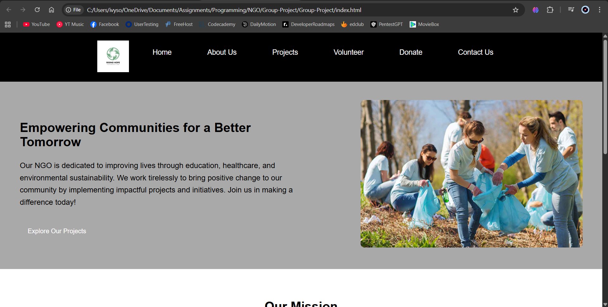
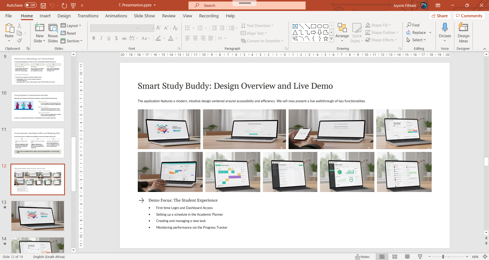
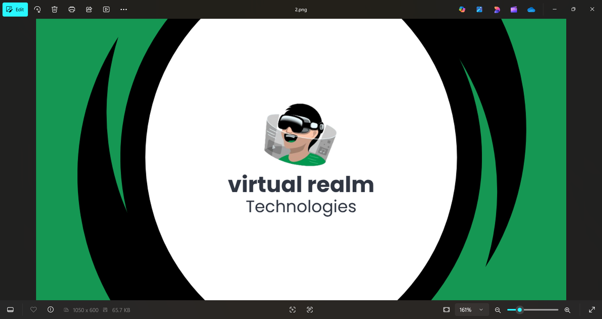

Hello! I'm Sanelisiwe, a Software Developer in training focused on applying theoretical understanding to real-world problem-solving and technology-driven innovation. My approach combines theoretical understanding with hands-on practice, focusing on clean architecture and efficient problem-solving.
View My Work More about meA gallery of projects from my studies, showcasing my skills in web development and software engineering. **This section uses an HTML table format as required by the assignment brief.**
| Project Image (Click to View) |
Project Title | Short Description | Programmes Used / Technologies |
|---|---|---|---|
|  | NGO Community Services | Decoupled a monolithic application into specialized microservices to improve scalability and designed a robust, event-driven API layer. | HTML, CSS, JavaScript, JSON, GitHub, IDE(VS Code, JetBrains IDEs) |
|  | Smart Study Buddy Application | Developed an application structure using Microsoft Office tools for planning and documentation. Used MS Word for specifications, Excel for tracking and data organization, and Powerpoint for presentation and mockups | MS Word, Excel, Powerpoint |
|  | Virtual Realm Technologies | Comprehensive brand identity project, including corporate brand guidelines (MS Word), marketing materials (Canva/PowerPoint), and a video advert storyboard. Focus was on cohesive, professional communication. | MS Word, Canva, Powerpoint |
Hello! I'm Sanelisiwe, a Software Developer passionate about building robust, scalable applications. My approach combines theoretical understanding with hands-on practice, focusing on clean architecture and efficient problem-solving. I thrive on transforming complex technical requirements into functional, high-quality software.
My goal as an IT professional is to specialize in DevOps and cloud-native architecture, contributing to teams that build and maintain high-availability systems. I am dedicated to continuous learning, particularly in areas like advanced container orchestration (Kubernetes) and serverless computing. I aim to apply my theoretical knowledge to solve real-world industry problems and drive technology-driven innovation.
I believe that well-structured, maintainable code is the foundation of excellent software, and I strive to uphold best practices in all my projects, from initial design to final deployment.
Preview Resume (PDF)I am currently open to new full-time roles and freelance projects. Get in touch!
You can also find me across the web. Click an icon to connect!